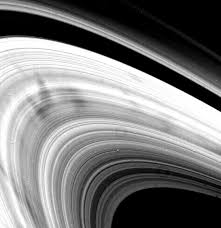

O Senhor dos Anéis
Saturno é conhecido por seu impressionante sistema de anéis, que são compostos principalmente de partículas de gelo e rocha.

116,460 km
1.4 bilhão km
29.5 anos
282,000 km
Saturno é conhecido por seu impressionante sistema de anéis, que são compostos principalmente de partículas de gelo e rocha.